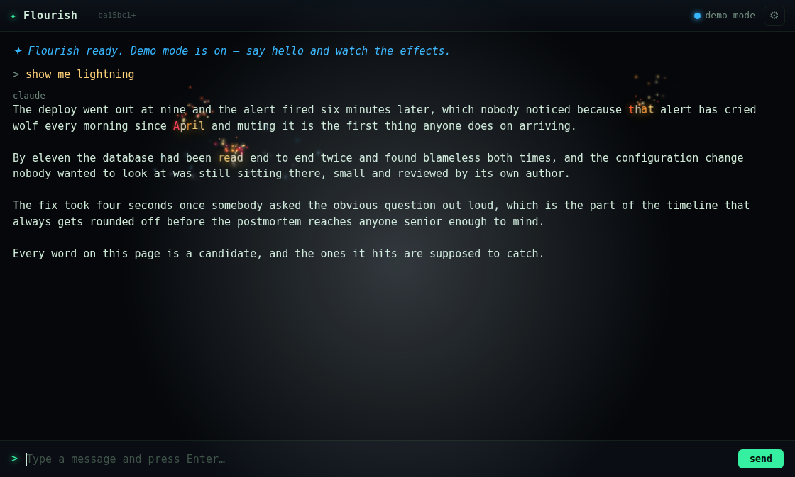
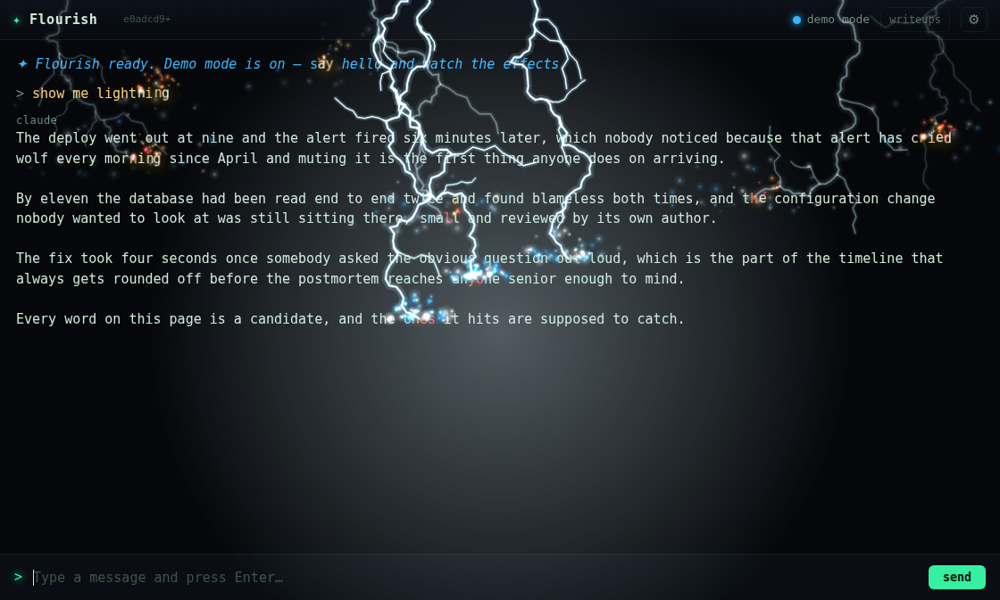
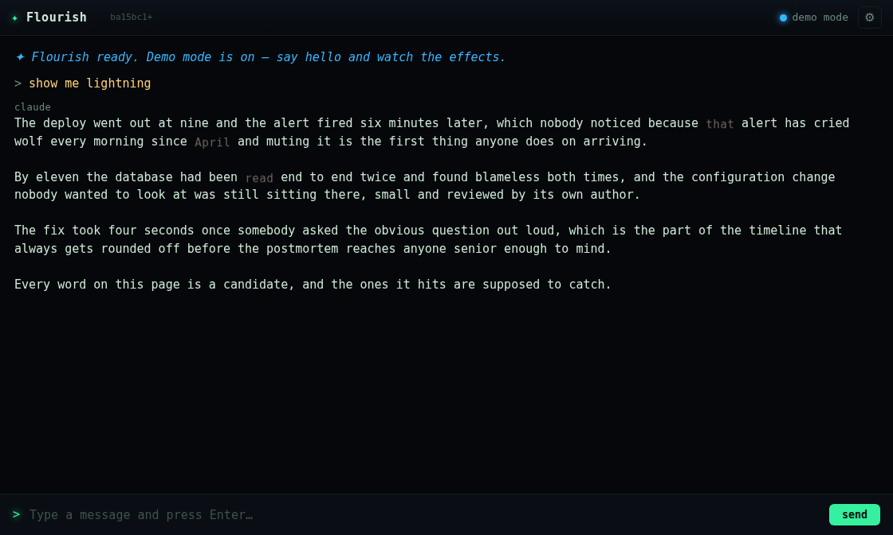
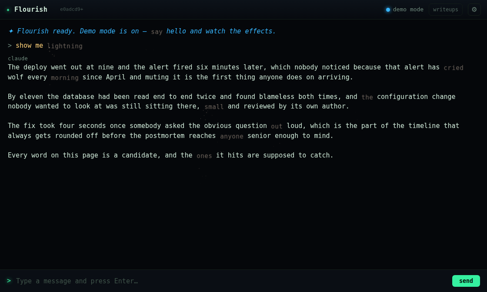

Jim fired twenty lightnings at a screen full of text and said:
"lightning didnt read the bottom"
Then, when I started reading code instead of measuring:
"make it reach every single line of text on the screen"
He was right, and the effect was worse than "didn't reach the bottom" — it could not reach it. Not on that page, not on any page. The bolts land in a band near the top and the rest of the transcript is unreachable by construction.
The standing rule in this repo is that reading this code is how you get fooled — apophenia shipped broken while I read its call chain three times and found nothing wrong with it. So the first move was tools/lightning-probe.js, which streams a real reply through the real renderer and dumps what fire() is actually handed. One run answered it:
=== what fire() received === anchors: 4 "that" at 903,155 "and" at 312,178 "had" at 239,223 "small" at 492,245 y spread: 90 px across the page === verdict === words struck: 3 words set on fire: 3
90px of spread on a 700px window. Every bolt inside y=155..245. And note the second tell, printed for weeks without anyone reading it as a bug: anchors: 4 but words struck: 3. The engine was throwing one of the four away.
Nothing here was broken. Three separate, individually reasonable limits multiplied into an effect that could only paint the top of the page.
| # | Cap | Where | What it actually did |
|---|---|---|---|
| 1 | CANDIDATES = 90 | renderer.js | A ceiling on how far back the walk goes, and the walk starts at the tail. 90 in-viewport words is the bottom nine or ten lines of a tall screen — the top of the page is not merely unpicked, it is never measured. |
| 2 | strikeTargets(4) | renderer.js | The decisive one. See below. |
| 3 | anchors.slice(0, 2 + rand(0..2)) | effects.js | The engine then kept 2–4 of what survived, taken off the front of a list that arrives sorted top-to-bottom. This is the 4 anchors → 3 bolts in the probe output. |
The middle one is the interesting failure, because the code involved is the fix for the last bug. stratifyAnchors was written to cure apophenia's collinear sampling: bucket the candidates by visual line, then round-robin one word per line per pass. It does that correctly. But look at the exit condition:
const buckets = [...rows.keys()].sort((a, b) => a - b).map((k) => rows.get(k)); ... for (let pass = 0; out.length < max; pass++) { for (const b of buckets) { if (b.length <= pass) continue; out.push(b[pass]); took++; if (out.length >= max) break; // <- returns before pass 0 finishes } }
Buckets are sorted ascending in y — top of screen first. Pass 0 walks them in that order and returns the instant it has max. So:
max smaller than the number of lines ⇒ "the first max lines", forever.
With max=4 that is the top four lines of the pool, whatever is below them, on every fire. This was invisible for as long as apophenia (max=14) was the only caller, because fourteen lines is most of a screen and the bias has nothing left to hide. lightning was the first caller to ask for a small number, and a small number is precisely where a "spread" function becomes a "take from the top" function.

t=450ms. Three ember clusters, all in a band near the top. The bolts have already decayed. The bottom two-thirds of the page has no bolt, no fire, and never could.
t=450ms, same probe, same reply, same frame. One bolt per line of text, full width, top to bottom. The grey claude label at y=135 is deliberately untouched.Raising CANDIDATES to 600 immediately produced anchors on "Demo" and "claude" — the demo-mode notice and the speaker label at the head of every line. Those are furniture, not prose, and igniteWord would have handed burn a UI element and turned the word claude to ash on every strike. The old 90-word cap had been hiding this by never walking far enough back to reach it. The walk now rejects anything inside .who:
const walk = document.createTreeWalker(transcript, NodeFilter.SHOW_TEXT, {
acceptNode: (n) => (n.parentElement && n.parentElement.closest('.who'))
? NodeFilter.FILTER_REJECT : NodeFilter.FILTER_ACCEPT,
});
The anchor count dropping from 10 to 9 on the same reply is the filter's own proof.
The strikeTargets(4) call carried a comment explaining itself: "every one of these is a bolt, and a screen full of bolts is weather, not a strike." That was a real design position, and the fix overrides it. Jim's instruction settled it in one line — "make it reach every single line of text on the screen" — so: he wants the weather. Worth recording that the old comment was never actually delivering its own intent anyway; 4 did not mean "four bolts, tastefully spread". It meant "the top four lines and a 90px band", which is not a design, it's an accident with a rationale attached.
flourish.js — lineKey(y) extracted so bucketing and counting cannot drift apart, plus lineCount(cand). stratifyAnchors(cand, lineCount(cand)) is exactly one anchor per line: pass 0 takes one from every bucket and fills max precisely as it runs out.renderer.js — wordCandidates() split out of wordAnchors(); new lineAnchors() asks for every line by name rather than guessing a constant; CANDIDATES 90 → 600 so the pool can physically hold a full screen; .who excluded from the walk.effects.js — the slice is gone; every anchor becomes a bolt. The stagger is rescaled to a fixed 380ms window (spread = 380 / (n-1)) instead of k * rand(60,190), which at one bolt per line would have dealt the last bolt of a 30-line screen a 4-second delay — a drizzle down the page, each bolt alone on screen, every earlier one already expired.stratifyAnchors keeps its top-bias, documented in its header as a property rather than a bug, with the instruction that a caller wanting the whole screen must ask for lineCount(cand).Same probe, same reply, same frame times; only the code differs.
| before | after | |
|---|---|---|
anchors handed to fire() | 4 | 9 |
| bolts created | 3 | 9 |
| words struck | 3 | 9 |
| words set on fire | 3 | 9 |
| y spread | 90 px | 286 px |
| all bolts landed by | — | 711 ms |
9 rather than 10 because the .who filter correctly drops the claude label. On a full-height transcript (18 lines of text, 700px window) the same run gives 18 anchors, 18 bolts, 18 struck, 18 alight, y spread 511px, all landed by 823ms — i.e. it scales with the page rather than with a constant.

t=2800ms. Three ashed words, all in the top band.
t=2800ms. One ashed word per line, every line, and the prose entirely readable underneath. This is the clearest single proof that every line was reached.npm test 206/206 and npm run smoke:web both green — but per this repo's own rules, neither is the evidence. The evidence is the probe dump and the four frames above. npm test covers pure modules only and has passed 88/88 on a fatally broken app; the screenshots are here because counts cannot see composition, which is the lesson the ASCII scenes left behind two commits ago.
This is the fifth time in this repo that the thing standing in front of the bug was something built to prevent the previous bug. stratifyAnchors exists because apophenia sampled collinearly; it fixed that completely and carried a new bias out the other side, one that only expresses itself for callers it didn't have yet.
The generalisable form: a function that takes a max and a set it must sample from has a policy for "max is smaller than the set", and that policy is almost never written down. Here the policy was "take from the front", the front was sorted by y, and so the honest name for stratifyAnchors(cand, 4) was never "four spread anchors" — it was "the top four lines". Ask for what you want by name (lineCount(cand)) rather than by a number that happens to be close to it.
And the probe printed anchors: 4 / struck: 3 the whole time. It was right there, in the output, and it read as a rounding detail rather than as a third cap. A discrepancy between what you hand a function and what it does is never a detail.